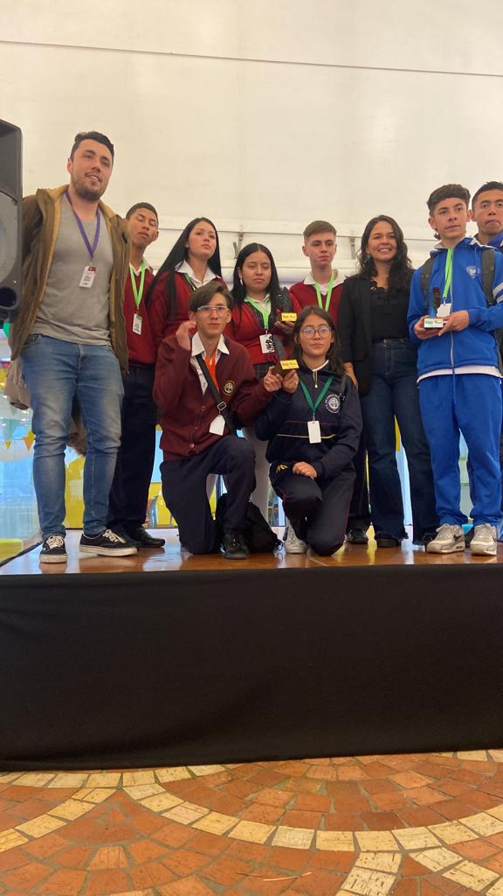

EXPEREINCIAS DE VIDA - COMUNIDAD DE LA MEDIA TÉCNICA
"Que Opina y Siente Nuestra Comunidad"

Teniendo en cuenta que todo este proceso se desarrolla para el alumno, buscando que este pueda vislumbrar un medio que le permita su desarrollo personal en la dimensión laboral y en otros aspectos; es importante destacar sus opiniones al respecto, a continuacion se muestran experiencias de vida de exalumnos que participaron en el proyecto, la de alumnos actuales y docentes que participaron en la preparación de los alumnos. Asi como algunas imagenes que presentan el trabajo de dichos alumnos.